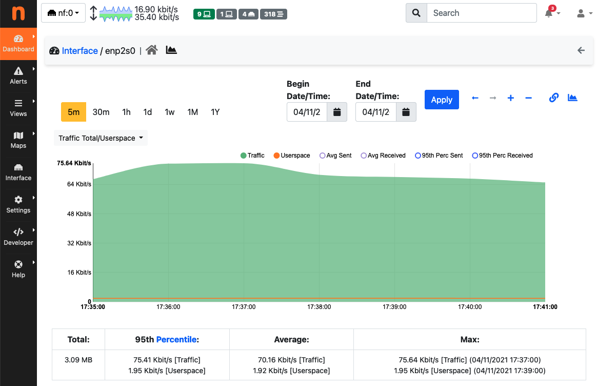
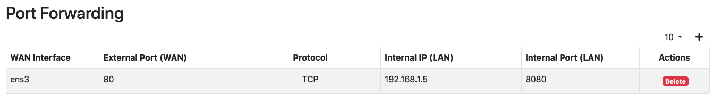
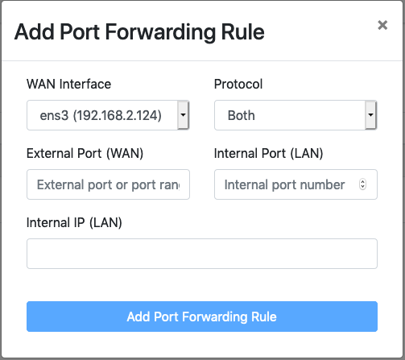

Режим маршрутизатора
При работе в режиме маршрутизатора nEdge будет маршрутизировать трафик от интерфейса LAN. к одному из настроенных WAN-интерфейсов. Весь трафик, идущий через WAN-интерфейс будет NAT с адресом интерфейса.
Важное замечание относительно режима маршрутизации: по умолчанию он заблокирует весь трафик. Чтобы действительно включить маршрутизацию трафика, необходимо включить хотя бы один шлюз в сети. политики маршрутизации, как описано ниже.
Интерфейс WAN можно настроить со статическим адресом или в формате DHCP. клиентский режим. Сетевой интерфейс можно выборочно отключить, чтобы предотвратить любой трафик. пройти через это.

Конфигурация сети интерфейса WAN
NAT (трансляция сетевых адресов) по умолчанию активна на сетевых интерфейсах WAN. Это означает, что локальный IP-адрес клиентов LAN заменяется на WAN. собственный адрес интерфейса. При необходимости можно отключить NAT из настройки интерфейса.

WAN-интерфейс NAT
nEdge реализует динамическую многопутевую маршрутизацию в соответствии с определенной пользователем маршрутизацией. политики. Политики маршрутизации работают со шлюзами, поэтому давайте сначала поговорим о шлюзе.
Шлюзы
Перед настройкой политик маршрутизации необходимо настроить шлюзы. Шлюз указывает IP-адрес, который будет использоваться в качестве следующего перехода для маршрутизации пакетов. Шлюз также имеет адрес монитора, который является IP-адресом, который будет использоваться для проверьте, работает ли шлюз в данный момент. nEdge будет периодически отправлять PING-пакеты на этот адрес через шлюз, чтобы проверить, может ли шлюз правильно маршрутизировать трафик.

Конфигурация шлюзов
Для каждого настроенного интерфейса WAN автоматически создается шлюз. Это шлюзы либо привязаны к указанному вручную шлюзу интерфейса WAN, в случае статической конфигурации или к шлюзу WAN-интерфейс будет приобретаться динамически, если для интерфейса включен клиентский режим DHCP.
Пользовательские шлюзы также могут быть созданы по желанию. Типичным примером является использование одного порта WAN для маршрутизации трафика через разные шлюзы. Все шлюзы и сам порт nEdge WAN соединены через многопортовый коммутатор. В этом случае все шлюзы должны находиться в одной IP-сети, чтобы nEdge мог правильно маршрутизировать трафик через них.
Текущее состояние шлюза можно проверить из Шлюзы и пользователи страница.

Просмотр состояния шлюзов
В таблице для каждого шлюза показано, какой сетевой интерфейс он будет использовать для маршрутизировать трафик вместе с его текущим статусом. Значок разорванной цепи рядом с имя интерфейса указывает, что канал интерфейса в настоящее время не работает.
Статус шлюза может быть одним из следующих:
Вверх: шлюз в настоящее время работает и может правильно маршрутизировать пакеты. к настроенному адрес монитора.
Вниз: шлюз в настоящее время не работает или не может правильно маршрутизировать пакеты. к настроенному адрес монитора.
недостижимый: в настоящее время у nEdge нет возможности достичь IP-адрес шлюза. Это может быть вызвано отключением соединения интерфейса или неправильно настроенная сеть шлюза/интерфейса. Обычно статический IP не был настроено или DHCP не назначает IP-адрес.
Также доступна статистика по отдельным физическим интерфейсам. Чтобы Чтобы увидеть их, щелкните имя интерфейса в приведенном выше представлении состояния шлюзов. Откроется страница с подробностями интерфейса.

Детали физического интерфейса
На странице представлена статистика интерфейса, рассчитанная с момента последней перезагрузка nEdge. Среди статистики отображаются байты и пакеты. переданных и полученных, а также текущую пропускную способность.
Статистика физического интерфейса также доступна в виде исторических временных рядов. Чтобы получить доступ к этим временным рядам, щелкните значок диаграммы в навбаре.
Доступные таймсерии:
Трафик отображается в обоих направлениях, т. е. отправлено (TX) и получено (RX).
Общий трафик/пользовательское пространство чтобы показать долю общего трафика, которая была выгружена в ядро.

Временные ряды физического интерфейса
Политики маршрутизации
Политика маршрутизации — это набор правил, определяющих приоритеты шлюзов. Политики маршрутизации должны быть связаны с конкретными пользователи через Политика маршрутизации опцию в конфигурации пользователя. Политика маршрутизации будет применена ко всем пользовательские устройства. По умолчанию политика маршрутизации устанавливается по умолчанию для вновь созданных пользователей.

Настройка политики маршрутизации
Настраивая приоритеты шлюзов, можно эффективно реализовать балансировка нагрузки и аварийное переключение между несколькими шлюзами. В частности, когда некоторые шлюзы имеют тот же приоритет будет у трафика сбалансированная нагрузка между ними. Когда один шлюз имеет более низкую приоритет, затем другой, шлюзы будут работать в аварийное переключение мод где подворотня с более низким приоритетом будет использоваться только в том случае, если тот, у которого более высокий приоритет, не находится в Вверх статус. Именно это и происходит на картинке выше, где АльтернативныйПуть находится в аварийном переключении с eth1 интерфейсный шлюз.
Важно отметить, что балансировка нагрузки не может разделить один и тот же поток между несколькими шлюзы, так как это фактически нарушит поток.
nEdge периодически отслеживает состояние шлюзов, чтобы при изменении состояния шлюзов обнаружен, он будет динамически обновлять шлюз, используемый в настоящее время клиентами, до шлюз в Вверх статус с наивысшим приоритетом. nEdge также адаптируется к кабелям подключить/отключить события. Когда интерфейсы WAN настроены в режиме клиента DHCP, кабели можно даже поменять местами, и nEdge автоматически обнаружит настройку новых шлюзов.
Статические маршруты
Иногда может потребоваться добавить статические маршруты в nEdge для правильной обработки пользовательского трафика.
Статические маршруты, если они определены, применяются к любой маршрутизации nEdge. политики и имеют приоритет над любым другим указанным шлюзом. То есть, если есть это пара шлюзов для политики маршрутизации, а именно СБ и Wi-Fi, то трафик будет сопоставляться со всеми определенные статические маршруты (и, возможно, отправленные через лучшее совпадение) перед отправкой через Wi-Fi или СБ.
В качестве примера рассмотрим следующий сценарий:
inet <-> gw (192.168.2.1) <-> (WAN 192.168.2.149) nEdge (LAN 192.168.1.1) <-> (192.168.1.2 LAN 10.100.200.0/24 с gw 192.168.1.1)
Пакет ping, исходящий от хоста 10.100.200.2 в самой правой локальной сети, и предназначено 8.8.8.8 достигнет nEdge, но ответ не сможет достичь исходного хоста, поскольку у nEdge нет маршрутизация информации к каждому 10.100.200.0/24. Следовательно, следует добавить статический маршрут 10.100.200.0/24 через 192.168.1.2 чтобы убедиться, ответ может достичь исходного хоста.
DHCP Сервер
Когда режим маршрутизации включен, сервер DHCP можно включать или отключать по желанию. на настроенном интерфейсе локальной сети. Обычно он должен быть включен.

DHCP конфигурация сервера
Также можно настроить собственный диапазон IP-адресов для сервера DHCP. Более того, когда сервер DHCP включен, из DHCP Аренда страница это возможно установить статический IP-адрес для сопоставления MAC-адресов.

DHCP конфигурация статической аренды
Чтобы просмотреть все активные аренды DHCP, включая статические, посетите страницу «DHCP Активные аренды» в разделе «Система».

DHCP активная аренда
Переадресация портов
При работе в режиме маршрутизатора nEdge маскирует IP-адреса клиентов с помощью IP-адрес интерфейса WAN, который используется для маршрутизации трафика (если не указано NAT). отключен). Это означает, что хост, подключенный на стороне WAN сети, не будет возможность связаться с локальными клиентами, подключенными к локальной сети. Чтобы обеспечить такое общение, необходимо настроить правило переадресации портов, сообщающее nEdge, что все входящие соединения на данном порту TCP/UDP следует сопоставить внутренний IP-адрес и порт локальной сети. Это можно настроить на странице «Переадресация портов» под значком шестеренки.

Правила переадресации портов
В приведенном выше примере показаны два правила переадресации портов, активные в данный момент на интерфейсе. эт1. Внешний хост, подключающийся к общедоступному IP-адресу eth1 через порт 56123, будет иметь возможность связаться с локальным клиентом 192.168.1.5 ssh порт 22.
Нажав кнопку «плюс», можно определить новые правила.


Добавить правило переадресации портов
Внешний порт может представлять собой либо один номер порта, либо диапазон портов, например 1000-1010. При использовании диапазона портов все внешние порты в этом диапазоне будут быть сопоставлен с одним внутренним портом. протокол указывает, должно ли правило сопоставляться TCP порты, UDP порты или оба.